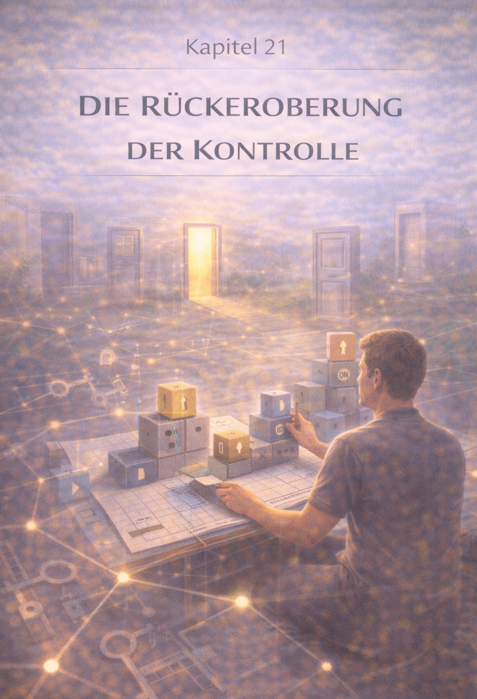

Kapitel 21: Die Rückeroberung der Kontrolle
Die Rückeroberung der eigenen Souveränität – Kapitelansicht.
DE
EN
Kapitel 21 – Die Rückeroberung der Kontrolle

Kapitelbild – Die Rückeroberung der Kontrolle